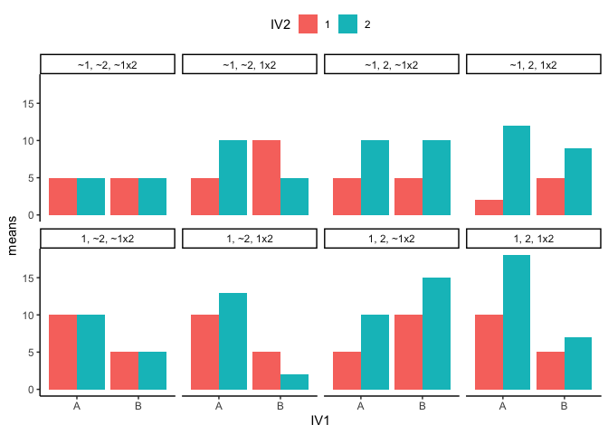
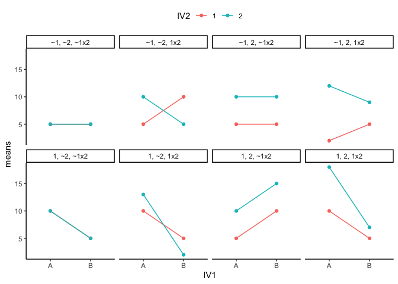
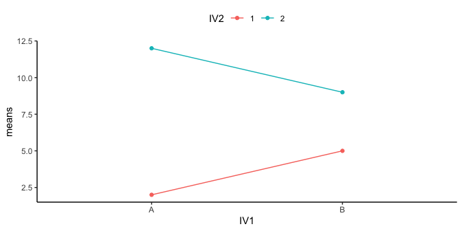
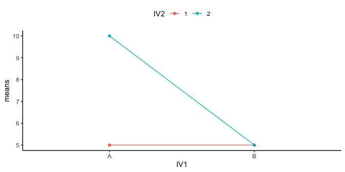
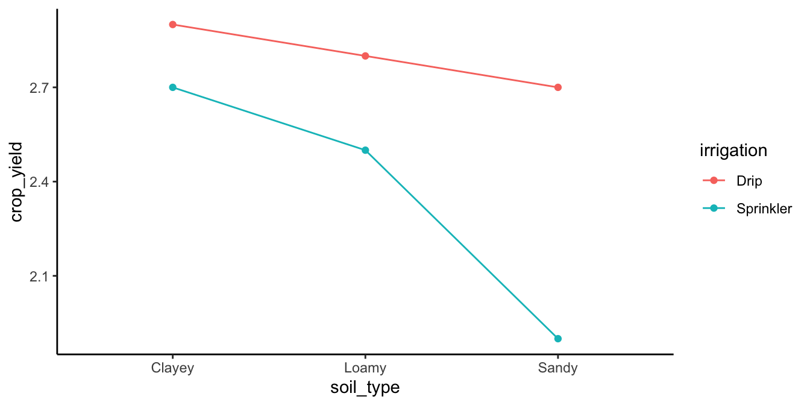
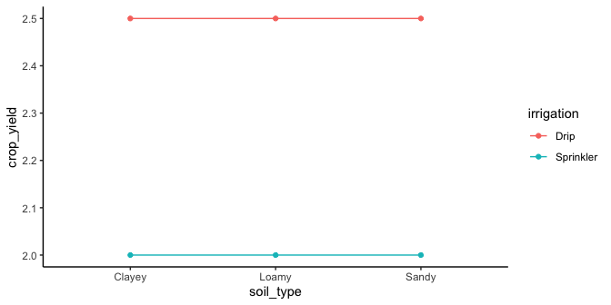
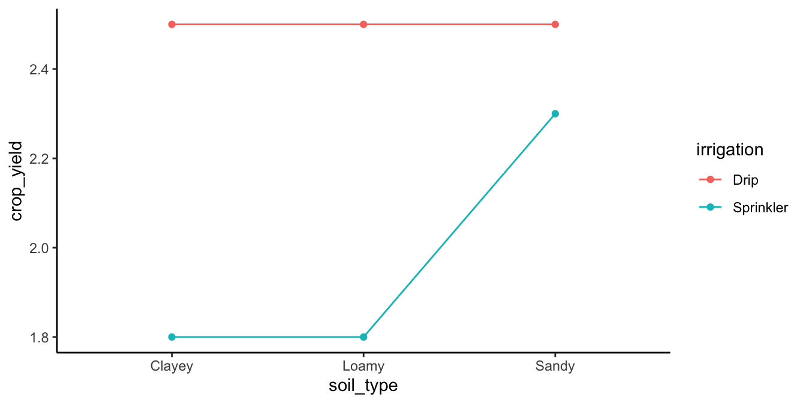
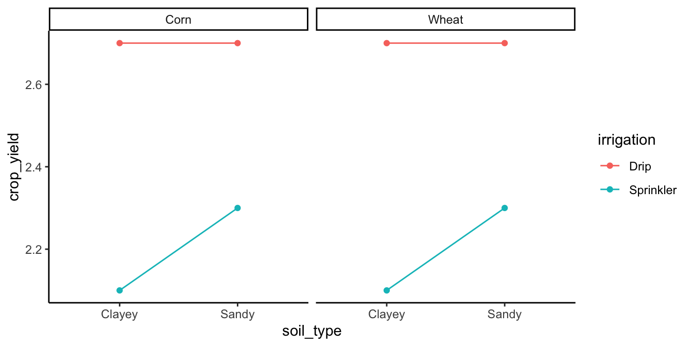
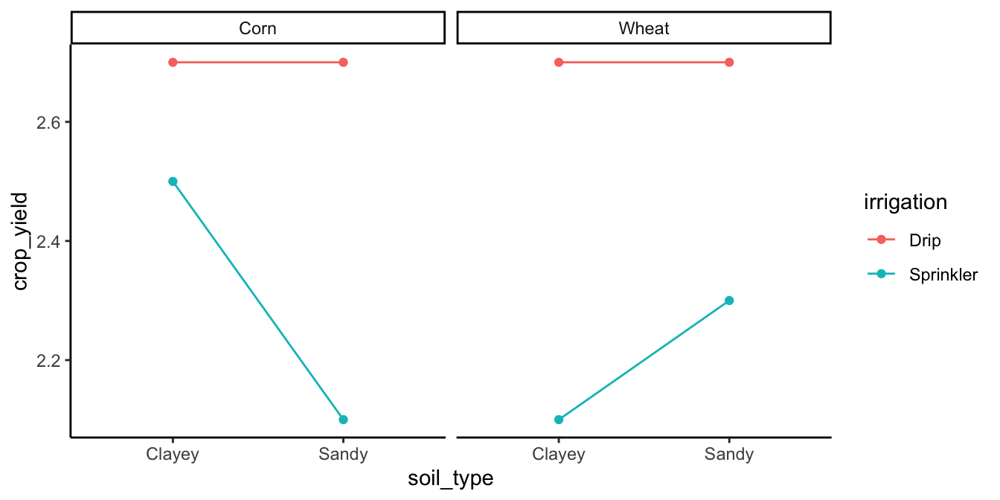

11 More On Factorial Designs
Chapter notes
Portions adapted from the Factorial ANOVA chapter, contributors Keryn Bain, Rachel Blakey, Stephanie Brodie, Corey Callaghan, Will Cornwell, Kingsley Griffin, Matt Holland, James Lavender, Andrew Letten, Shinichi Nakagawa, Shaun Nielsen, Alistair Poore, Gordana Popovic, Fiona Robinson and Jakub Stoklosa. “Environmental Computing” https://environmentalcomputing.net/
In this chapter, we’re diving deeper into factorial designs, a cornerstone of understanding complex data in environmental science. You’re already familiar with the idea of having more than one independent variable (IV) in your experiments. These IVs can be structured in various ways: all between-subjects, all within-subjects (like repeated measures), or a mix of both. ANOVA is our trusty tool to analyze these designs, giving us insights into each IV’s main effect and their interactions.
11.1 Looking at main effects and interactions
Factorial designs are very common in environmental research. You’ll often come across studies showing results from these designs. It’s crucial to be comfortable interpreting these results. The key skill here is to recognize patterns of main effects and interactions in data graphs. This can get tricky with more than two IVs, each having multiple levels.
11.1.1 2x2 designs
Let’s explore 2x2 designs. Here, you can expect two main effects and one interaction. You’ll compare means for each main effect and interaction. There are eight possible outcomes in such a design:
- no IV1 main effect, no IV2 main effect, no interaction
- IV1 main effect, no IV2 main effect, no interaction
- IV1 main effect, no IV2 main effect, interaction
- IV1 main effect, IV2 main effect, no interaction
- IV1 main effect, IV2 main effect, interaction
- no IV1 main effect, IV2 main effect, no interaction
- no IV1 main effect, IV2 main effect, interaction
- no IV1 main effect, no IV2 main effect, interaction
OK, so if you run a 2x2, any of these 8 general patterns could occur in your data. That’s a lot to keep track of isn’t it? As you develop your skills in examining graphs that plot means, you should be able to look at the graph and visually guesstimate if there is, or is not, a main effect or interaction. You will need you inferential statistics to tell you for sure, but it is worth knowing how to know see the patterns.
Let’s visualize these outcomes using R. We’ll create bar and line graphs to illustrate these patterns. Bar graphs are great for seeing differences in means directly, while line graphs help us spot interactions – look for crossing lines as a hint of interaction. Figure 11.1 shows the possible patterns of main effects and interactions in bar graph form. Here is a legend for the labels in the panels.
- 1 = there was a main effect for IV1.
- ~1 = there was not a main effect for IV1
- 2 = there was a main effect for IV2
- ~2 = there was not a main effect of IV2
- 1x2 = there was an interaction
- ~1x2 = there was not an interaction
Figure 11.2 shows the same eight patterns in line graph form:

In line graphs, interactions are more apparent. Parallel lines suggest no interaction, while crossing lines indicate potential interactions. The position of points relative to each other helps identify main effects. Things get complicated fast. When designing experiments, aim for the minimum number of independent variables (IVs) and levels needed to answer your research question. This approach makes interpreting your data more straightforward and your conclusions clearer. Whenever you see that someone ran a 4x3x7x2 design, your head should spin. It’s just too complicated.
11.2 Interpreting main effects and interactions
Understanding main effects and interactions is essential for accurately interpreting research data, especially in complex fields like environmental science.
A main effect refers to the consistent impact of an independent variable (IV) on a dependent variable (DV). For example, in environmental studies, consider the effect of a specific fertilizer (IV) on plant growth (DV). If using this fertilizer consistently results in increased growth compared to not using it, we observe a clear main effect. This effect remains true regardless of other variables such as soil type or weather conditions.
Often, it is convenient to think of main effects as a consistent influence of one manipulation. However, the picture changes when we introduce an interaction. An interaction occurs when the effect of one IV depends on another IV. By definition, an interactino means that some main effect is not behaving consistently across different situations. For instance, the impact of our fertilizer might vary depending on the level of sunlight or the type of soil, indicating an interaction between these factors and the fertilizer. This interaction disrupts the consistency of the main effect, suggesting that the effect of the fertilizer is not uniform across all conditions.
Researchers often phrase their findings to highlight this complexity: “We found a main effect of X, BUT, this main effect was qualified by an interaction between X and Y.” The use of “BUT” here is crucial. It signals that the main effect cannot be fully understood without considering the interaction. The interaction indicates that the influence of the IV changes under different conditions, making it essential to consider these variables together for a complete understanding.
In environmental science, this becomes particularly relevant when studying ecosystems or climate interactions, where multiple variables interplay in complex ways. The interpretation of main effects and interactions in such contexts is not just about identifying individual effects but understanding how these effects change in different environmental settings.
Here are two generalized examples to help you make sense of these issues:
11.2.1 A consistent main effect and an interaction

Figure 11.3 shows a main effect and interaction. There is a main effect of IV2: the level 1 means (red points and line) are both lower than the level 2 means (aqua points and line). There is also an interaction. The size of the difference between the red and aqua points in the A condition (left) is bigger than the size of the difference in the B condition.
How would we interpret this? We could say there WAS a main effect of IV2, BUT it was qualified by an IV1 x IV2 interaction.
What’s the qualification? The size of the IV2 effect changed as a function of the levels of IV1. It was big for level A, and small for level B of IV1.
What does the qualification mean for the main effect? Well, first it means the main effect can be changed by the other IV. That’s important to know. Does it also mean that the main effect is not a real main effect because there was an interaction? Not really, there is a generally consistent effect of IV2. The green points are above the red points in all cases. Whatever IV2 is doing, it seems to work in at least a couple situations, even if the other IV also causes some change to the influence.
11.2.2 An inconsistent main effect and an interaction

Figure 11.4 shows another 2x2 design. You should see an interaction here straight away. The difference between the aqua and red points in condition A (left two dots) is huge, and there is 0 difference between them in condition B. Is there an interaction? Yes!
Are there any main effects here? With data like this, sometimes an ANOVA will suggest that you do have significant main effects. For example, what is the mean difference between level 1 and 2 of IV2? That is the average of the green points ( (10+5)/2 = 15/2= 7.5 ) compared to the average of the red points (5). There will be a difference of 2.5 for the main effect (7.5 vs. 5).
Starting to see the issue here? From the perspective of the main effect (which collapses over everything and ignores the interaction), there is an overall effect of 2.5. In other words, level 2 adds 2.5 in general compared to level 1. However, we can see from the graph that IV2 does not do anything in general. It does not add 2.5s everywhere. It adds 5 in condition A, and nothing in condition B. It only does one thing in one condition.
What is happening here is that a “main effect” is produced by the process of averaging over a clear interaction.
How would we interpret this? We might have to say there was a main effect of IV2, BUT we would definitely say it was qualified by an IV1 x IV2 interaction.
What’s the qualification? The size of the IV2 effect completely changes as a function of the levels of IV1. It was big for level A, and nonexistent for level B of IV1.
What does the qualification mean for the main effect? In this case, we might doubt whether there is a main effect of IV2 at all. It could turn out that IV2 does not have a general influence over the DV all of the time, it may only do something in very specific circumstances, in combination with the presence of other factors.
11.3 Mixed Designs
In this book, we’ve explored various research designs, emphasizing that they can take different forms. These designs can be categorized as either between-subjects, where different subjects are in each group, or within-subjects, where the same subjects participate in all conditions. When you combine these approaches in a single study, you create what’s known as a mixed design.
A mixed design occurs when one of your independent variables (IVs) is treated as a between-subjects factor, while another is treated as a within-subjects factor. This blend offers a unique approach to examining how different variables interact and affect the outcome.
In environmental science research, mixed designs are particularly useful for studying complex interactions between variables that vary both within and between subjects. For instance, consider a study examining the impact of a new agricultural technique (IV1) on crop yield (DV). This technique could be applied to different plots of land (between-subjects factor), while also measuring the impact across different seasons (within-subjects factor). Such a design allows researchers to understand not only the overall effectiveness of the technique but also how its impact varies seasonally.
The key to successfully navigating mixed designs lies in understanding how to calculate the appropriate statistical measures. Specifically, the F-values for each effect in an ANOVA (Analysis of Variance) are constructed using different error terms, depending on whether the IV is a within-subjects or between-subjects factor. While it’s possible to run an ANOVA with any combination of between and within-subjects IVs, the complexity increases with the number of variables and their categorizations.
As this is an introductory text, we won’t delve into the detailed formulas for constructing ANOVA tables with mixed designs. More advanced textbooks offer comprehensive discussions on this topic, and many resources are available online for those interested in deeper exploration.
11.4 More complicated designs
Up until now we have focused on the simplest case for factorial designs, the 2x2 design, with two IVs, each with 2 levels. It is worth spending some time looking at a few more complicated designs and how to interpret them.
11.4.1 3x2 design
In a 3x2 design there are two IVs. IV1 has three levels, and IV2 has two levels. Typically, there would be one DV. Let’s apply this to an environmental science scenario.First, let’s make the design concrete.
Imagine a study examining the impact of different irrigation methods (IV1: drip irrigation vs. sprinkler irrigation) on crop yield (DV) across three types of soil (IV2: sandy, loamy, clayey). The main effects would be the overall impact of irrigation method and soil type on crop yield, while the interaction would explore how these effects vary together.
For instance, drip irrigation might consistently produce higher yields than sprinkler irrigation, showing a main effect of IV1. Soil type might also independently affect yield, with loamy soil perhaps leading to the highest yields, followed by clayey and sandy soils, indicating a main effect of IV2. An interaction would occur if, for example, the advantage of drip irrigation over sprinkler irrigation is more pronounced in sandy soil compared to clayey soil. Note that these examples are hypothetical to illustrate the concept.
The factorial ANOVA will test:
* whether there are any differences in crop yield among the three levels of soil type
* whether there are any differences in crop yield among the two levels of irrigation * whether there is any interaction between irrigation type and soil type
You have three null hypotheses:
* there is no difference between the means for each level of soil type, Ho: \(\mu_{Clay} = \mu_{Loam} = \mu_{Sand}\)
* there is no difference between the means for each level of irrigation, $Ho: \(\mu_{Drip} = \mu_{Sprinkler}\)
* there is no interaction between the factors
Remember, this is far better than running two separate single factor ANOVAs that contrast irrigation effects for each level of soil type because you have more statistical power (higher degrees of freedom) for the tests of interest, and you get a formal test of the interaction between factors which is often scientifically interesting.
We might expect data like shown in Figure 11.5:

The figure shows some pretend means in all conditions. Let’s talk about the main effects and interaction.
Main Effect of Irrigation Method: The main effect of the irrigation method is evident. Drip irrigation (represented by red line) generally leads to higher crop yields compared to sprinkler irrigation (represented by aqua line).
Main Effect of Soil Type: The main effect of soil type is clearly present. Clayey soils show the highest yield, followed by loamy soils, then sandy soils
Interaction Between Irrigation Method and Soil Type: Is there an interaction? Yes, there is. Remember, an interaction occurs when the effect of one IV depends on the levels of an another. The advantage of drip irrigation over sprinkler irrigation is more pronounced in sandy soil compared to clayey soil. So, the size of the irrigation effect (drip vs. sprinkler) changes with the type of soil. There is evidence in the means for an interaction. You would have to conduct an inferential test on the interaction term to see if these differences were likely or unlikely to be due to sampling error.
If there was no interaction and no main effect of soil type, we would see something like the pattern in Figure 11.6.

What would you say about the interaction if you saw the pattern in Figure 11.7?

The correct answer is that there is evidence in the means for an interaction. Remember, we are measuring the irrigation effect (effect of drip vs. sprinkler) three times. The irrigation effect is the same for clayey and loamy soils, but it is much smaller for sandy soils. The size of the irrigation effect depends on the levels of the soil type IV, so here again there is an interaction.
11.4.2 2x2x2 designs
Let’s take it up a notch and look at a 2x2x2 design. In a 2x2x2 design, there are three independent variables (IVs), each with two levels. This design allows for the examination of three main effects, three two-way interactions, and one three-way interaction.
We’ll add another independent variable to our example from before: crop type (wheat vs. corn) as our third IV. So overall, in this 2x2x2 design, we’ll consider three independent variables (IVs): irrigation method (IV1: drip vs. sprinkler), soil type (IV2: sandy vs. clayey), and crop type (IV3: wheat vs. corn). The dependent variable (DV) is still crop yield. This design helps us understand not just individual effects but also how these factors interact in various combinations.

n Figure 11.8, we have two panels: one for corn and one for wheat. You can think of the 2x2x2 as two 2x2 designs, one for each crop type. The key takeaway? Both wheat and corn show similar patterns, indicating a 2x2 interaction between irrigation method and soil type. We observe main effects for irrigation and soil type, but no main effect for crop type, and importantly, no three-way interaction.
But what exactly is a three-way interaction? It occurs when the pattern of a 2x2 interaction differs across the levels of the third variable. Let’s visualize this with Figure 11.9.

We are looking at a 3-way interaction between irrigation type, crop type, and soil type. What is going on here?
For corn crop yields, we see that there is a smaller irrigation effect in clayey soils, but the effect of irrigation gets bigger in sandy soils. A pattern like this might make sense, sandy soils don’t retain much water so the irrigation method might matter more.
The wheat crop yields show a different pattern. Here, the irrigation effect is large in clayey soils and smaller in sandy soils. This difference in patterns between corn and wheat yields indicates a three-way interaction among irrigation type, soil type, and crop type.
In other words, the 2x2 interaction for the corn is different from the 2x2 interaction for the wheat. This can be conceptualized as an interaction between the two interactions, and as a result there is a three-way interaction, called a 2x2x2 interaction.
A general pattern here. Imagine you had a 2x2x2x2 design. That would have a 4-way interaction. What would that mean? It would mean that the pattern of the 2x2x2 interaction changes across the levels of the 4th IV. If two three-way interactions are different, then there is a four-way interaction.This becomes very complicated very quickly, another reminder of why simplicity in design is desirable.
11.4.3 Understanding and Interpreting Interactions in Environmental Science
So, you’ve got a handle on what interactions are and what they might look like. But there’s still a key question hanging in the air: Why do interactions matter?
11.4.3.1 Interpreting the Results
Remember our example exploring the impact of different irrigation methods on crop yield across various soil types? The data in Figure 11.5 revealed something interesting: drip irrigation significantly boosts crop yield in sandy soil, but this effect diminishes in loamy and clayey soils. This is what we call an interaction effect: the impact of the irrigation method (drip vs. sprinkler) on crop yield varies depending on the soil type.
This interaction is important. It tells us that the effectiveness of an irrigation method is not uniform across all soil types. It suggests that environmental factors (like soil type) can influence how well an intervention (like irrigation method) works.
11.4.3.2 Practical Implications in Environmental Science
Understanding these interactions has real-world implications for environmental management and policy-making. Consider these examples:
Resource Allocation: By understanding how different soil types interact with various irrigation methods, farmers can tailor their agricultural practices more precisely. For instance, in areas with clayey soil, which retains water well, less frequent irrigation might be more suitable, reducing water usage and preserving natural resources.
Climate Adaptation Strategies: Understanding these interactions could play a role in developing climate adaptation strategies. For regions facing increased rainfall variability due to climate change, selecting the right combination of soil management and irrigation techniques can help in maintaining crop yields despite changing weather patterns.
Policy Formulation: Insights from these interactions can guide the creation of more nuanced agricultural policies. For example, providing subsidies or incentives for adopting certain irrigation methods in specific soil types could optimize crop yield and promote sustainability.
Think about it: are there other environmental factors where understanding interactions could be crucial for effective management and policy-making?